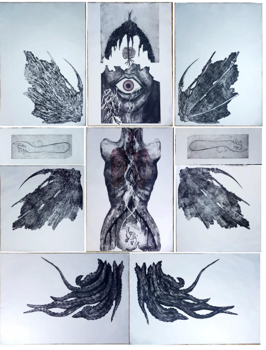

Lejla Pleho is a Bosnian visual artist, born in Sarajevo in 1994. Graduated at Traditional Arts High School in Sarajevo in 2012 as Textile and Design Art Tehchinican, after that she enroled in Sarajevo Academy of Fine Arts Sarajevo where she graduated in 2024 at Print Making department, specialised in Etching and Screen printig.
She has had numerous exhibitions, among which she highlights
She has participated in numerous art colonies and projects, among which she highlights
Inspiration for her works come from human internal sturugles, psych, humans constant need to find balance and place for itself in world. Her works find root inspiration in exploration of human, border between concious and subconcsu is often visible in her works.
She utilizes any accessible medium to transmit her messages and one that can convey her feelings in best way possible in given moment.
Bachelor of Fine Arts - Printmaking
Academy of Fine Arts · Sarajevo
Fashion design
Secondary School of Traditional Arts · Sarajevo
Her artistic practice is rooted in traditional printmaking, with a particular focus on etching techniques that demand patience, precision, and an intimate dialogue with the material. Rather than treating the printing plate as a passive surface, she approaches it as a living medium—one that records emotion through every engraved line and every acid bite. The expressive potential of etching allows her to translate invisible psychological states into tactile visual forms. Balancing technical discipline with emotional intensity, her work reveals a fascination with contrast: darkness and light, fragility and strength, silence and expression. For Lejla Pleho, printmaking is not only a technique, but a language through which the unseen dimensions of human experience become visible.
"Line is my language. Through it I say what words cannot."
Exhibition Name Award
Institution · City
Group Exhibition
Gallery · City
Interested in a work?